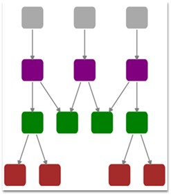

The Hierarchical Tree Layout arranges nodes in a tree-like structure, where the nodes in hierarchical layout may have multiple parents. As a result, there is no need to specify the layout root.
Orientation
The Layout Manager lets you orient the hierarchical tree in many directions. The Orientation property of Diagram Model can be used to specify the tree orientation.
· TopBottom - Places the root node at the top and the child nodes are arranged below the root node.
· BottomTop - Places the root node at the bottom and the child nodes are arranged above the root node.
· LeftRight - Places the root node at the left and the child nodes are arranged on the right side of the root node.
· RightLeft -
Places the root node at the right and the child nodes are arranged on the left
side of the root node.
Properties
|
Property |
Description |
Type of the property |
Value it accepts |
Any other dependencies/ sub properties associated |
|
VerticalSpacing |
Gets or sets the Vertical spacing between nodes. |
CLR Property |
Double |
No |
|
HorizontalSpacing |
Gets or sets the Horizontal spacing between nodes. |
CLR Property |
Double |
No |
|
SpaceBetweenSubTrees |
Gets or sets the space between sub trees. |
CLR Property |
Double |
No |
|
Orientation |
Gets or sets the orientation. |
CLR Property |
TreeOrientation.LeftRight TreeOrientation.RightLeft TreeOrientation.TopBottom TreeOrientation.BottomTop |
No |
|
EnableCycleDetection |
Gets or sets a value indicating whether Cycle detection is enabled or not. |
DependencyProperty |
Boolean (true/ false) |
No |
|
Bounds |
Gets or sets the bounds value which specifies the position of the root node in case of tree layout. |
CLR Property |
Thickness |
No |
The Bounds property of the DiagramView class can be used to specify the position of the root node, based on which the entire tree gets generated.
The following code snippet specifies how the Hierarchical-tree layout can be specified.
1. The LayoutType should be set to HierarchicalTreeLayout in DiagramModel class.
|
[XAML]
<UserControl x:Class="HierarchicalTreeLayout_2008.MainPage" xmlns="http://schemas.microsoft.com/winfx/2006/xaml/presentation" xmlns:x="http://schemas.microsoft.com/winfx/2006/xaml" xmlns:d="http://schemas.microsoft.com/expression/blend/2008" xmlns:mc="http://schemas.openxmlformats.org/markup-compatibility/2006" mc:Ignorable="d" xmlns:syncfusion="clr-namespace:Syncfusion.Windows.Diagram;assembly=Syncfusion.Diagram.Silverlight" >
<!--Diagram Control--> <syncfusion:DiagramControl Name="diagramControl" Grid.Row="1"> <!-- Model to add nodes and connections--> <syncfusion:DiagramControl.Model> <syncfusion:DiagramModel LayoutType="HierarchicalTreeLayout" Orientation="TopBottom" x:Name="diagramModel"> </syncfusion:DiagramModel> </syncfusion:DiagramControl.Model>
<!--View to display nodes and connections added through model.--> <syncfusion:DiagramControl.View> <syncfusion:DiagramView Bounds="0,0,700,750" Background="White" Name="diagramView" > </syncfusion:DiagramView> </syncfusion:DiagramControl.View> </syncfusion:DiagramControl> </UserControl> |
2. Then the nodes can be added and the connections can be specified as follows:
|
[C#]
Node n1 = new Node(Guid.NewGuid(), "n1"); Node n2 = new Node(Guid.NewGuid(), "n2"); Node n3 = new Node(Guid.NewGuid(), "n3"); Node n4 = new Node(Guid.NewGuid(), "n4"); Node n5 = new Node(Guid.NewGuid(), "n5"); Node n6 = new Node(Guid.NewGuid(), "n6"); Node n7 = new Node(Guid.NewGuid(), "n7"); Node n8 = new Node(Guid.NewGuid(), "n8"); Node n9 = new Node(Guid.NewGuid(), "n9"); Node n10 = new Node(Guid.NewGuid(), "n10"); Node n11 = new Node(Guid.NewGuid(), "n11"); Node n12 = new Node(Guid.NewGuid(), "n12"); Node n13 = new Node(Guid.NewGuid(), "n13"); Node n14 = new Node(Guid.NewGuid(), "n14");
AddNode(n1, Colors.DarkGray, Colors.DarkGray); AddNode(n2, Colors.DarkGray, Colors.DarkGray); AddNode(n3, Colors.DarkGray, Colors.DarkGray); AddNode(n4, Colors.Purple, Colors.Purple); AddNode(n5, Colors.Green, Colors.Green); AddNode(n6, Colors.Purple, Colors.Purple); AddNode(n7, Colors.Purple, Colors.Purple); AddNode(n8, Colors.Brown, Colors.Brown); AddNode(n9, Colors.Brown, Colors.Brown); AddNode(n10, Colors.Green, Colors.Green); AddNode(n11, Colors.Green, Colors.Green); AddNode(n12, Colors.Green, Colors.Green); AddNode(n13, Colors.Brown, Colors.Brown); AddNode(n14, Colors.Brown, Colors.Brown);
//Creating conections between nodes Connect(n1, n4, "line1"); Connect(n6, n11, "line2"); Connect(n2, n6, "line3"); Connect(n6, n10, "line4"); Connect(n3, n7, "line5"); Connect(n5, n8, "line6"); Connect(n5, n9, "line7"); Connect(n4, n5, "line8"); Connect(n7, n10, "line9"); Connect(n4, n11, "line10"); Connect(n7, n12, "line11"); Connect(n12, n13, "line12"); Connect(n12, n14, "line13");
//Creating connection and adding to the model void Connect(Node HeadNode, Node TailNode, string name) { LineConnector connection = new LineConnector(); connection.Name = name; connection.ConnectorType = ConnectorType.Straight;
// Specify the TailNode node connection.TailNode = TailNode;
//Specifying the Head Node connection.HeadNode = HeadNode;
//Adding to the Diagram Model diagramModel.Connections.Add(connection); }
void AddNode(Node n,Color pathfill, Color pathstroke) { n.Width = 50; n.Height = 50; n.Shape = Shapes.RoundedRectangle; n.NodePathFill = new SolidColorBrush(pathfill); n.NodePathStroke = new SolidColorBrush(pathstroke); n.NodePathStrokeThickness = 2; diagramModel.Nodes.Add(n); } |
|
[VB]
Private n1 As New Node(Guid.NewGuid(), "n1") Private n2 As New Node(Guid.NewGuid(), "n2") Private n3 As New Node(Guid.NewGuid(), "n3") Private n4 As New Node(Guid.NewGuid(), "n4") Private n5 As New Node(Guid.NewGuid(), "n5") Private n6 As New Node(Guid.NewGuid(), "n6") Private n7 As New Node(Guid.NewGuid(), "n7") Private n8 As New Node(Guid.NewGuid(), "n8") Private n9 As New Node(Guid.NewGuid(), "n9") Private n10 As New Node(Guid.NewGuid(), "n10") Private n11 As New Node(Guid.NewGuid(), "n11") Private n12 As New Node(Guid.NewGuid(), "n12") Private n13 As New Node(Guid.NewGuid(), "n13") Private n14 As New Node(Guid.NewGuid(), "n14")
AddNode(n1, Colors.DarkGray, Colors.DarkGray) AddNode(n2, Colors.DarkGray, Colors.DarkGray) AddNode(n3, Colors.DarkGray, Colors.DarkGray) AddNode(n4, Colors.Purple, Colors.Purple) AddNode(n5, Colors.Green, Colors.Green) AddNode(n6, Colors.Purple, Colors.Purple) AddNode(n7, Colors.Purple, Colors.Purple) AddNode(n8, Colors.Brown, Colors.Brown) AddNode(n9, Colors.Brown, Colors.Brown) AddNode(n10, Colors.Green, Colors.Green) AddNode(n11, Colors.Green, Colors.Green) AddNode(n12, Colors.Green, Colors.Green) AddNode(n13, Colors.Brown, Colors.Brown) AddNode(n14, Colors.Brown, Colors.Brown)
'Creating conections between nodes Connect(n1, n4, "line1") Connect(n6, n11, "line2") Connect(n2, n6, "line3") Connect(n6, n10, "line4") Connect(n3, n7, "line5") Connect(n5, n8, "line6") Connect(n5, n9, "line7") Connect(n4, n5, "line8") Connect(n7, n10, "line9") Connect(n4, n11, "line10") Connect(n7, n12, "line11") Connect(n12, n13, "line12") Connect(n12, n14, "line13")
'Creating connection and adding to the model void Connect(Node HeadNode, Node TailNode, String name) Dim connection As New LineConnector() connection.Name = name connection.ConnectorType = ConnectorType.Straight
'Specify the TailNode node connection.TailNode = TailNode
'Specifying the Head Node connection.HeadNode = HeadNode
'Adding to the Diagram Model diagramModel.Connections.Add(connection)
void AddNode(Node n,Color pathfill, Color pathstroke) n.Width = 50 n.Height = 50 n.Shape = Shapes.RoundedRectangle n.NodePathFill = New SolidColorBrush(pathfill) n.NodePathStroke = New SolidColorBrush(pathstroke) n.NodePathStrokeThickness = 2 diagramModel.Nodes.Add(n) |

Figure 19: Hierarchical-Tree Layout
Layout Spacing
Spacing between the nodes with respect to different levels and siblings are adjustable; this will be helpful to adjust the distance between nodes, so that it will meet many business needs. As this is a general topic between all layouts, detailed explanation about this can be found in Layout Spacing under DiagramModel.
Cyclic path in Hierarchical-Tree Layout
Unlike Directed-Tree layout, hierarchical tree layout supports nodes with multiple parents. This will cause a cyclic path in the layout and a detailed explanation about this scenario can be found in Cyclic path in Hierarchical-Tree Layout under DiagramModel.
Refresh Layout
When there are changes in the content of the page link, new nodes and connectors added to the layout have to be refreshed to get the page’s content aligned again to give space for new contents. To refresh the layout follow the following code snippet.
|
[C#] HierarchicalTreeLayout tree = new HierarchicalTreeLayout(diagramModel, diagramView); tree.RefreshLayout(); |
|
[VB]
Dim tree As New HierarchicalTreeLayout(diagramModel, diagramView) tree.RefreshLayout() |
Here diagramModel and diagramView is an instance of
DiagramModel and DiagramView respectively.
See Also
Cyclic path in Hierarchical-Tree Layout